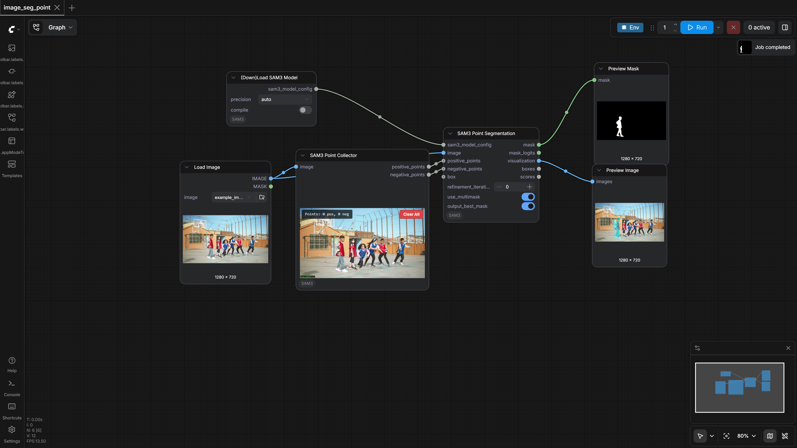
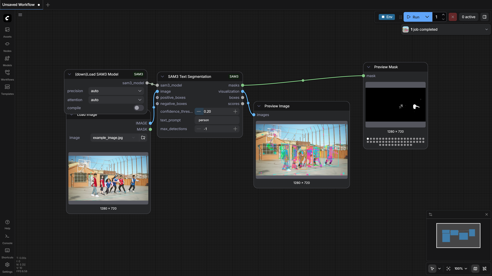
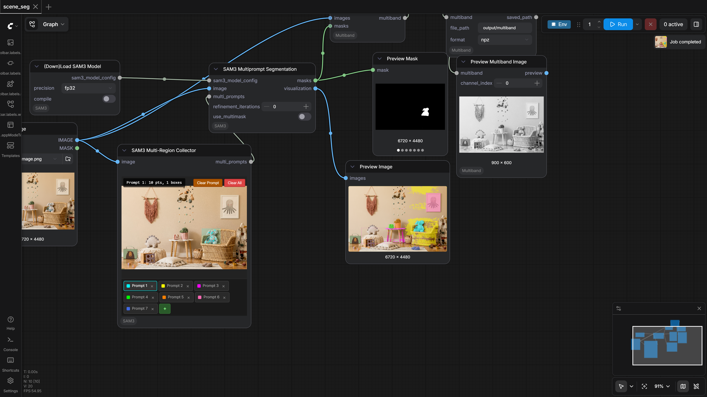
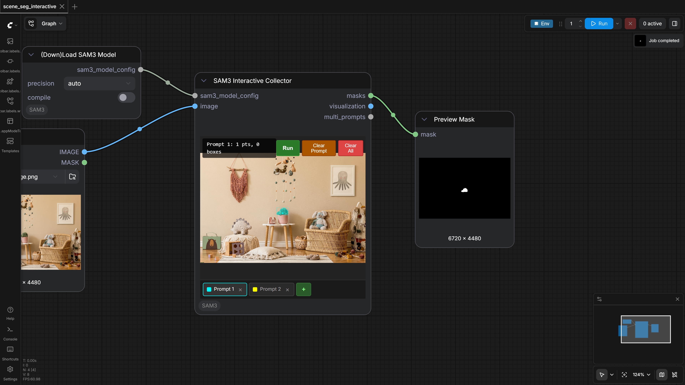
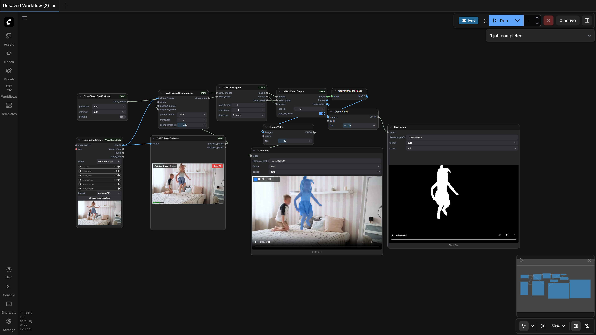

ComfyUI-SAM3
Test Results
2026-02-24 08:19 UTC
Windows-11-10.0.26100-SP0
Intel64 Family 6 Model 58 Stepping 9, GenuineIntel
NVIDIA RTX A4000
100.0%
5 passed
5/5 tests
Workflows
Grid
List

image_seg_point
pass
89.89s

image_seg_text
pass
44.60s

scene_seg
pass
103.13s

scene_seg_interactive
pass
55.06s

video_point_prompt
pass
156.36s
Downloaded Models
3 files · 3.2 GB
models/sam3/
3.2 GB
sam3.safetensors
3.2 GB
.cache\huggingface\download\sam3.safetensors.metadata
127.0 B
.cache\huggingface\.gitignore
1.0 B
×
0.0s / 0.0s
Resource Usage
RAM (GB)
VRAM (GB)